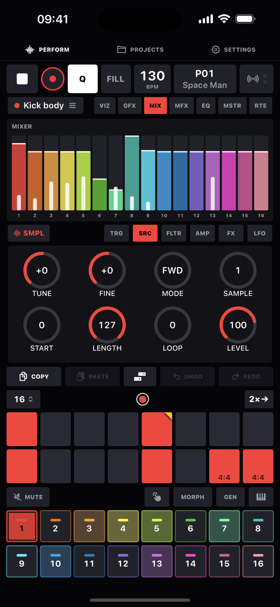
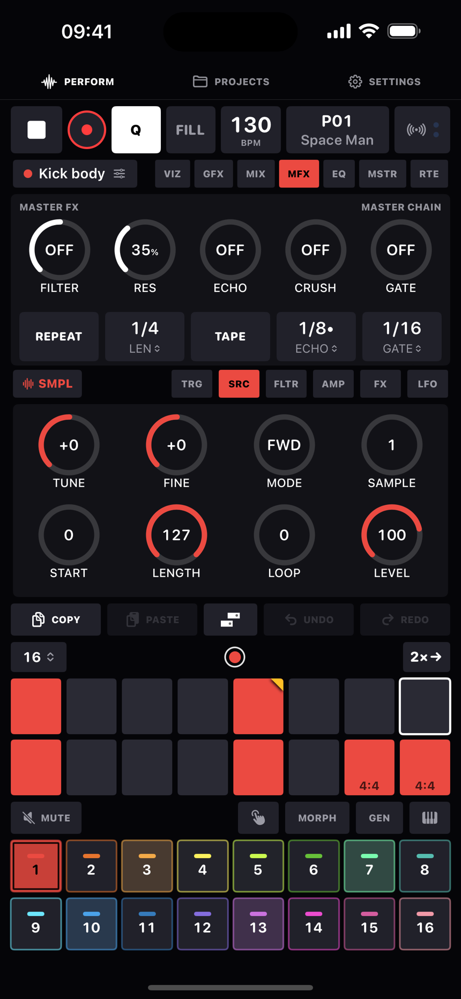
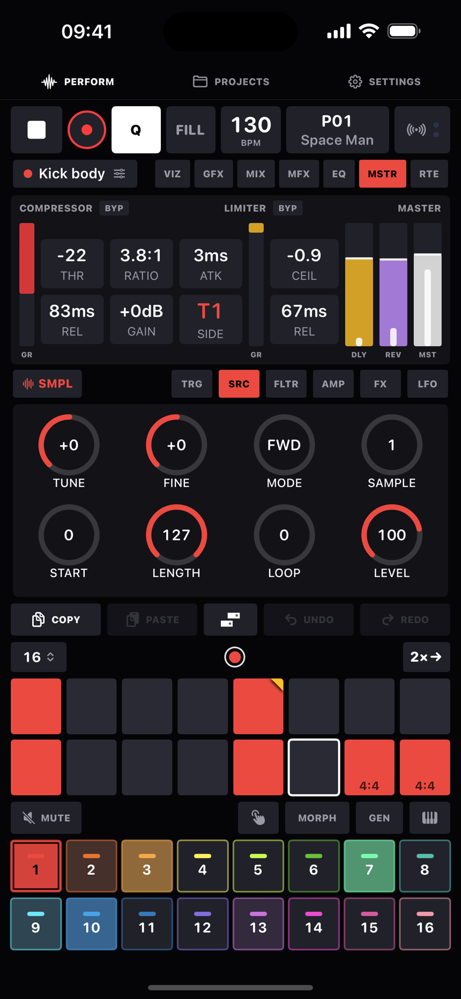

FX & mixer
The top carousel holds the whole mix side of the app: GFX · MIX · MFX · EQ · MSTR · RTE. Swipe between pages or map hardware arrows to page for you.
The signal path
Per-voice FX (the FX knob page) → track buses → master compressor (sidechainable, per-track routable) → master fader → EQ → DJ FX → limiter → a safety saturator. The delay and reverb are send buses with their own returns.
GFX: global sends
Two project-wide buses fed by every track's DELAY and REVERB send knobs.
| Delay | |
|---|---|
| TIME | Tempo-synced: 1/32, 1/16, 1/8T, 1/16·, 1/8, 1/4T, 1/8· (default), 1/4, 1/4·, 1/2. |
| FB | Feedback. |
| PING PONG | ON bounces echoes hard left/right. |
| TONE | Feedback-path brightness - low values darken each repeat. |
| Reverb | |
|---|---|
| SIZE / DAMP | Plate size and high-frequency damping. |
| PRE | Pre-delay, 0–120 ms. |
| WIDTH | Stereo width of the return, mono to full spread. |
MIX: the mixer
Sixteen faders with live meters, tinted per track. Internal tracks route through their VOL parameter - so the fader is p-lockable, LFO-able and morphable like any sound value; MIDI tracks send CC 7 on their channel. Muted tracks dim; tap a fader's label to select its track. Pan lives on each track's AMP page.



MFX: DJ performance FX
A performance panel on the master bus. Deliberately transient - nothing here saves with the project, so every session starts clean.
| Control | Does |
|---|---|
| FILTER | DJ-mixer color filter on one knob: left of center sweeps a lowpass down, right sweeps a highpass up. Double-tap to snap back to off. RES sets its resonance. |
| ECHO | Echo throw - feedback rises with the knob toward self-oscillation. Its division chip: 1/8, 1/8•, 1/4, 1/2. |
| CRUSH | One-knob lo-fi: sample-rate and bit-depth sweep together. |
| GATE | Trance gate locked to the beat grid; division chip 1/32–1/4. |
| REPEAT | Hold-pad beat repeat - loops the last beat, 1/2, 1/4 or 1/8 of master audio while held. |
| TAPE | Hold-pad tape stop - the master brakes to a standstill while held, spins back on release. |
EQ: master EQ
Three bands over a live response curve: LOW (shelf at 100 Hz, ±12 dB), MID (bell, sweepable 200 Hz–5 kHz via FREQ), HIGH (shelf at 8 kHz). Double-tap any cell to re-center flat; BYP bypasses without a click.
MSTR: dynamics and levels
- Compressor: THR (−40…0 dB), RATIO (1:1–20:1), ATK (1–100 ms), REL (30–600 ms), GAIN (makeup 0–+12 dB), and SIDE: the sidechain key, Master (self) or any single track - classic kick-ducking. A red meter shows gain reduction.
- Limiter: CEIL (0 to −24 dBFS) and REL (5–305 ms), with its own amber GR meter. Both stages have click-free BYP chips.
- Faders: DLY and REV return levels and the MST master volume, each with live meters.
RTE: compressor routing
A board of 16 track chips plus DLY and REV return chips. Lit = that source runs through the master compressor; dim = it bypasses and rejoins after, dry to the master fader. Route the drums through and the pads around, or duck everything except the delay tail - the choice is saved per track and survives device swaps.